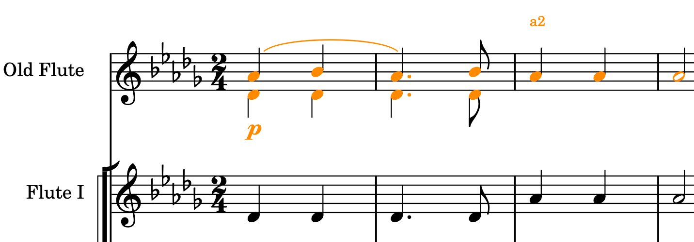
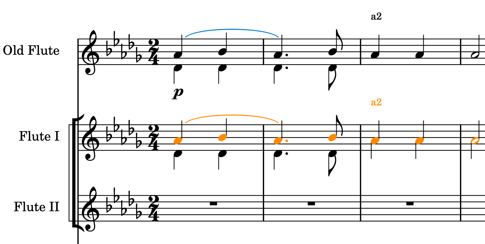
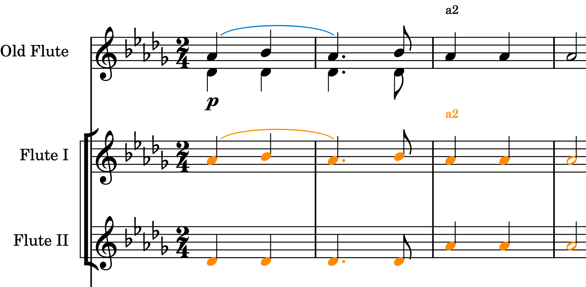

Dorico に読み込んだ MusicXML による重ね譜を偽物から本物にする方法
コンデンシング譜（重ね譜）を Sibelius / Finale で「自動的に管理できるもの」として作るのは現時点（2020 年 7 月）で不可能である。一部の人は Dorico 3.5 の「普通の譜から重ね譜までの表示の切り替え」その機能に見惚れ、Dorico を使い始めましたけど、Sibelius / Finale で作った以前のプロジェクトを MusicXML 経由で Dorico に読み込むと、なかなか以前の作った重ね譜は（Dorico にとって本物の重ね譜に）自動変換できず、人数の間違いによるプレイバックの聴き応えもおかしくなってしまう。
Dorico にとって本物の重ね譜は、自動化管理できるもので、下記の用途に応じる：
- 複数の総譜・パート譜で「重ね譜で表示するかどうか」その切り替え設定をと楽譜づつ個別対応できる。
- 重ね付を作るために、もうわざわざ新しい演奏者譜表を作る必要はない。
- Dorico での重ね譜は自動的に作られたものであり、簡単な楽譜設定で重ね譜の見た目を調整できる。
現時点で日本語版の Dorico 3.5 は重ね譜を「コンデンシング」だけと和訳しているけど、楽譜出版業界以外の人が読むと、やはり「重ね譜」のような和訳はわかりやすい：同じ独奏楽器の奏者二人の楽譜を重ねて表示すること。しかもカタカナ語って実に何も和訳していないし。
この文章は、MusicXML による重ね譜を偽物から本物にする方法を説明する。
免責条項
ところで、この文章はあくまで下記の２つ前提状況のため書いたものである：
- １つ重ね譜表に記された声部は２つ以下であること；
- １つ重ね譜表（偽物）に、「a2」のような合奏記号で指示された音符は、もし、この譜表で１つだけの声部に登録されていると、その声部は第１声部である。ちなみに、Dorico で、この声部は「符尾が上向きの声部１」と呼ばれる（下記の図例の通り）。

もし、上記と異なる前提状況があれば、この文章で説明した手順を（状況に応じて）調整する必要がある。
手順開始
まずは MusicXML で読み込んだ重ね譜表（偽物譜表）の直下に、同じ楽器の新しい独奏者を２人入れること：

記譜モードに切り替えて、偽物譜表から処理したい内容を選択して：

そして余計な操作をせずに、下記のメニュー操作を順次実行すること：
- 「編集 (Edit)」→「濾選 / フィルター (Filter)」→「声部 (Voices)」→「符尾が上向きの声部 (Up-Stem Voice) 1」
- 「編集 (Edit)」→「特殊な貼り付け (Paste Special)」→「下の譜表に複製」
- 「編集 (Edit)」→「声部 (Voices)」→「声部を変更 (Change Voice)」→「符尾が下向きの声部 (Down-Stem Voice) 1」
もし、最後でメニューには「符尾が下向きの声部 (Down-Stem Voice) 1」がなかったら、「新規の符尾が下向きの声部 (New Down-Stem Voice)」を選んで実行すること。
偽物譜表の同じ内容を再び選択して：

そして余計な操作をせずに、下記のメニュー操作を順次実行する：
- 「編集 (Edit)」→「濾選 / フィルター (Filter)」→「声部 (Voices)」→「符尾が下向きの声部 (Down-Stem Voice) 1」
- 「編集 (Edit)」→「コピー (Copy)」
パソコンキーボードの「Q」キーで「和音入力モード」を点滅操作して「使っていない」状態にすること。
（つまり、Dorico ウィンドウ画面の左のツールバーにある「和音（Q）」そのボタンを押されていない状態にすること。）
余計な操作をせずに、先処理したばかりの（第１新独奏者の）譜表に（同じ内容範囲の冒頭で）貼り付けること：
また偽物譜表の同じ内容を再び選択して：

そして余計な操作をせずに、下記のメニュー操作を順次実行する：
- 「編集 (Edit)」→「濾選 / フィルター (Filter)」→「声部 (Voices)」→「符尾が上向きの声部 (Up-Stem Voice) 1」
- 「編集 (Edit)」→「特殊な貼り付け (Paste Special)」→「下の譜表に複製」
これで、先処理したばかりの（第１新独奏者の）譜表に新しい（偽物の）重ね譜ができた：

この譜表は少なくともずっと２声部で演奏する物。たとえ音符は同じだとしても２声部で演奏する。
ついでに強弱記号などの演奏記号を補充？まだ早いけどね。
この新譜表の新内容を全部選択して、メニューで「編集 (Edit)」→「切り取り (Copy)」を実行して、
その直後、パソコンキーボードの「ENTER」キーを押し、
方向キー「↑」「↓」で、今の入力位置を第１新独奏者の譜表にして、
そして方向キー「←」「→」で、その時間位置を先の新内容の冒頭位置と設定して、
その後「Shift + ↓」を押して、「第１と第２新独奏者の譜表に同時入力可能な状態」になる。

そして余計な操作をせずに、下記のメニュー操作を実行する：
- 「編集 (Edit)」→「特殊な貼り付け (Paste Special)」→「破き分け貼付 / エクスプロード (Explode)」

この「破き分け貼付 / エクスプロード (Explode)」機能は、貼り付け先の範囲を選んでから使って、クリップボードの内容をその範囲の冒頭で貼り付けるる機能である。
強弱記号などの演奏記号を補充して、「a2」のような合奏記号を消して（後で自動管理できる本物は自動的に作る）：

最後に、このメニュー操作を実行：
- 「編集 (Edit)」→「Condensing」
記入し忘れた演奏記号がある？ギャレービューに切り替えて編集してください。
これでよし。残った問題は全部「Dorico の使用方法」の問題である。
この文章で説明することはここまで。お楽しみに。
$ EOF.